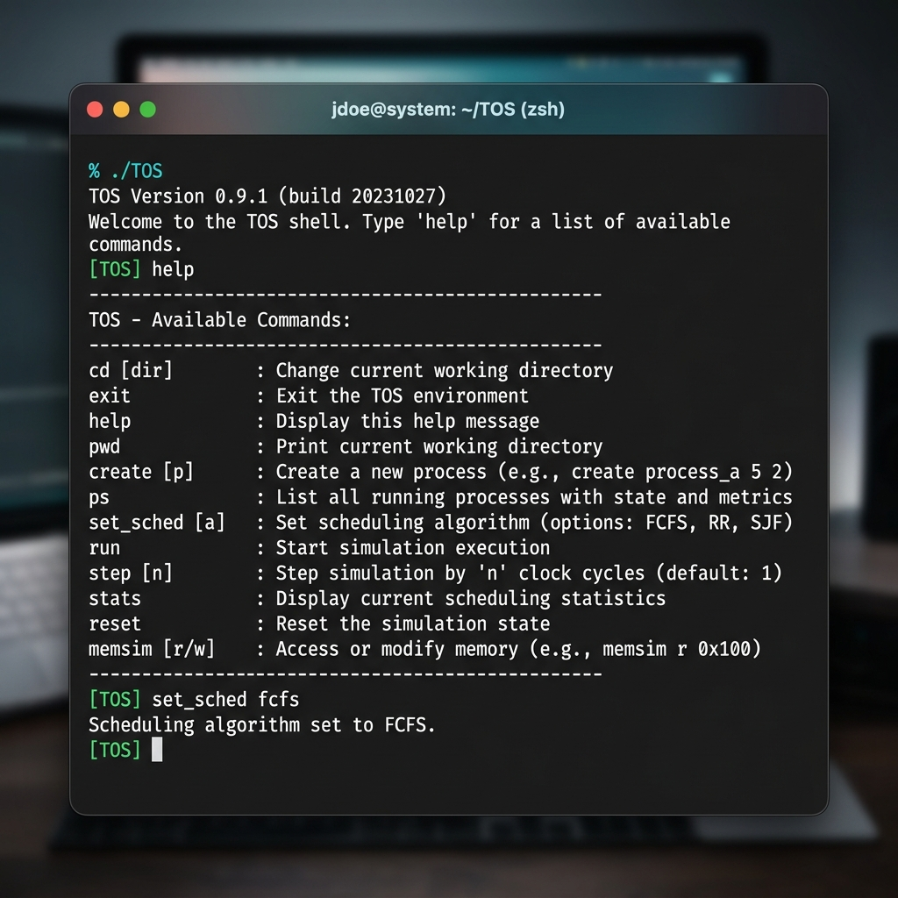
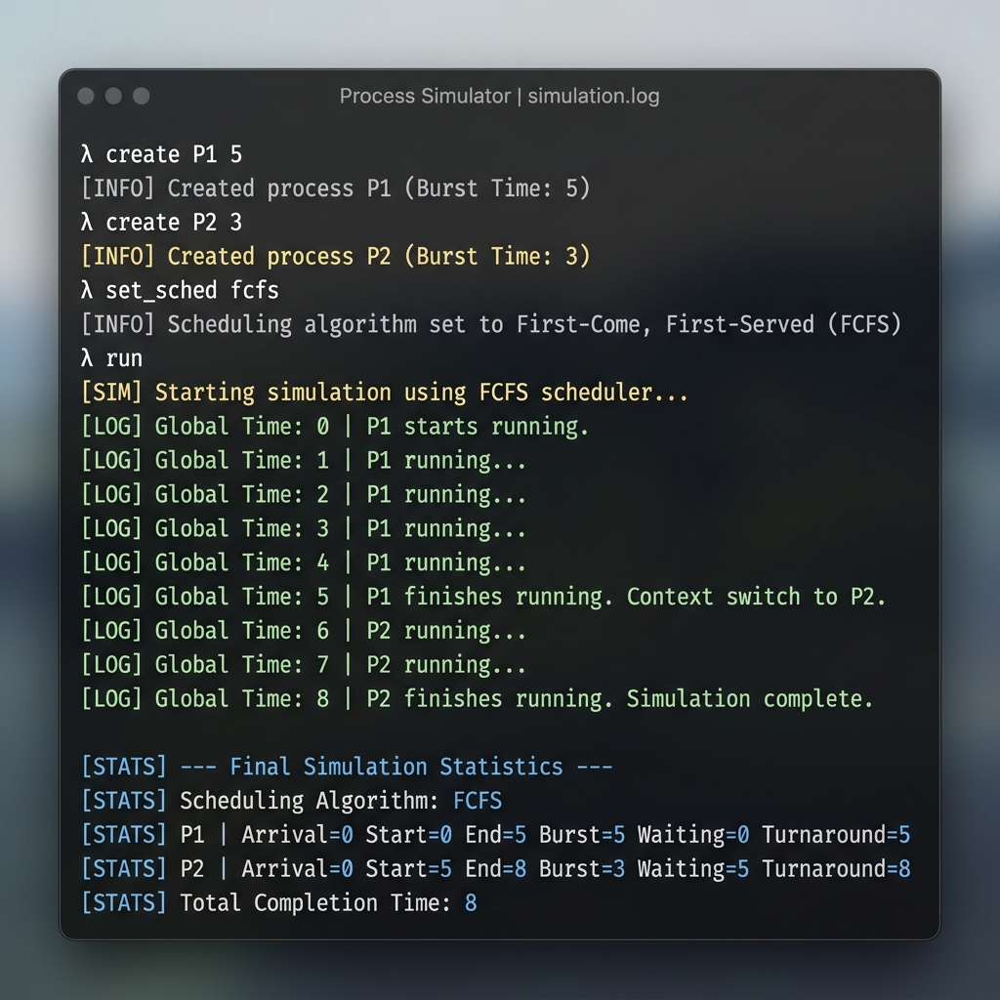
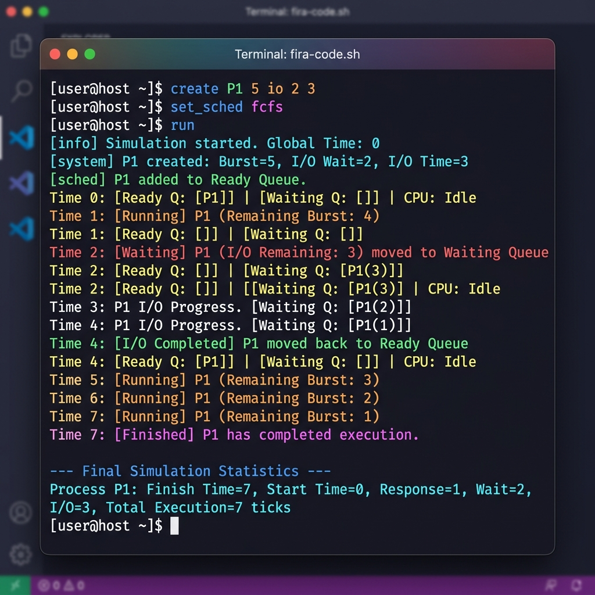
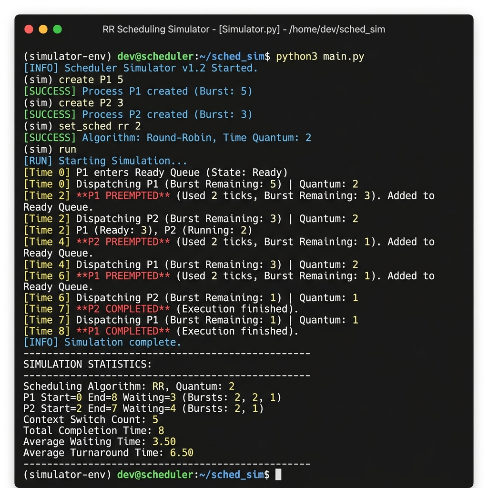
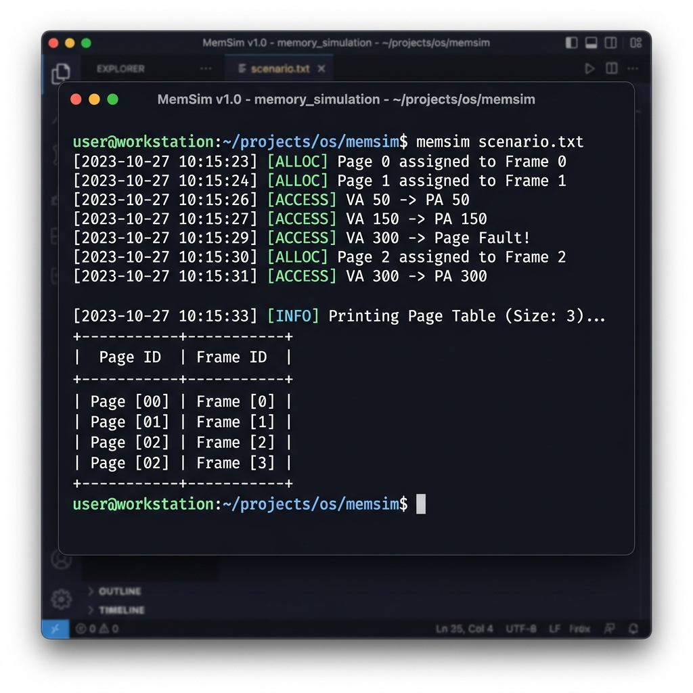
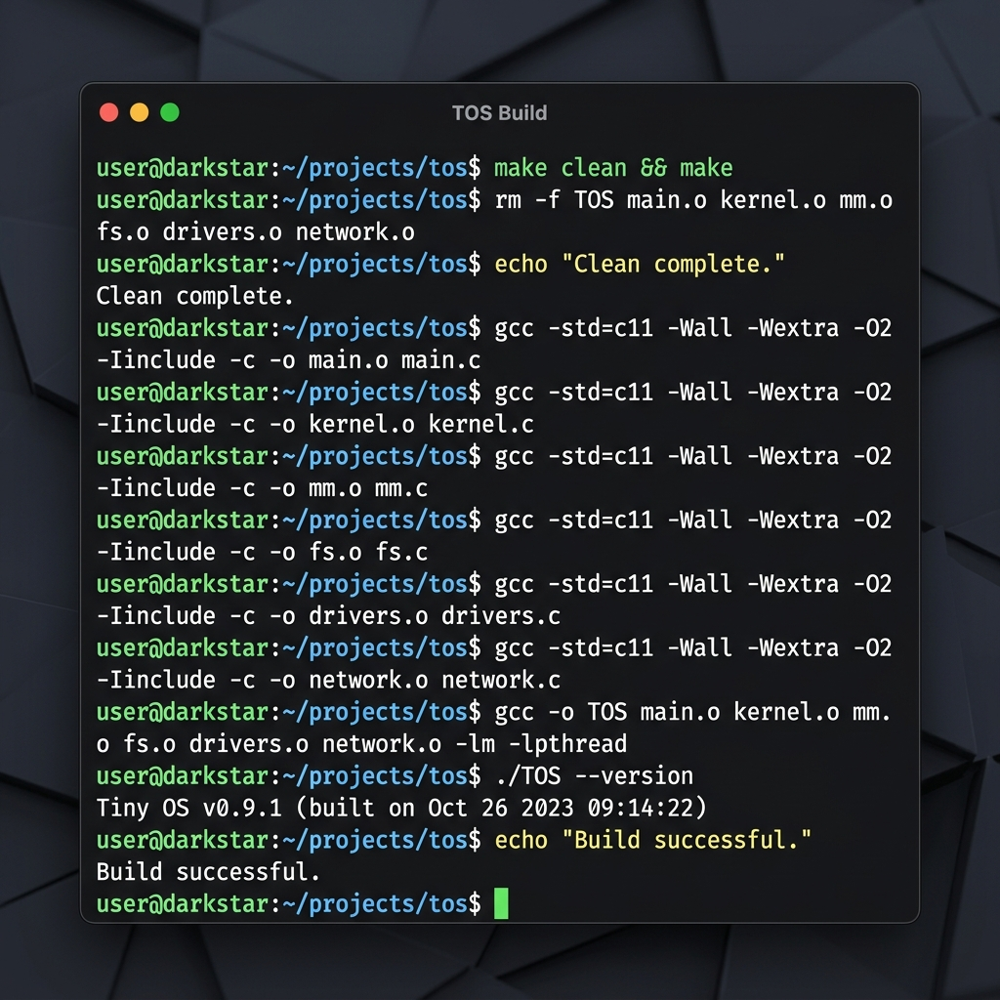

사용자 쉘 개발부터 가상 메모리 매핑 시뮬레이션까지 (Step 1 ~ 6 단계 전체 구현 완료)
내장/외부 명령 처리 쉘 구축 및 스케줄링 조작 명령어 바인딩
FCFS/RR 알고리즘, 컨텍스트 스위치, I/O 대기 큐 및 시뮬레이션 틱 제어
1KB 가상 물리 주소 구조의 페이징 매핑 및 Page Fault 예외 시뮬레이션
step을 자동 반복 수행.위 명령어를 실행하여 help와 set_sched fcfs가 출력되는 터미널 화면을 캡처하여 images/step1_2.png로 저장하세요.

위 시나리오 명령어를 실행하여 P1이 먼저 끝난 뒤 P2가 수행되는 FCFS 실행 로그 및 통계(stats)를 캡처하여 images/step3_fcfs.png로 저장하세요.

at 시점에 wait 초 동안 I/O를 사용하는 프로세스 생성.io_at에 도달하면 즉시 PROCESS_WAITING 상태로 전이되어 대기 큐(Waiting Queue)로 이동.io_remaining)을 1씩 감소시키며, 0에 도달하면 PROCESS_READY로 복귀시켜 준비 큐에 재진입.위 명령어를 실행하여 P1이 Time 2에 Waiting Queue로 이동하고, I/O Completed 후 복귀하여 완료하는 로그를 캡처하여 images/step4_io.png로 저장하세요.

위 명령을 실행하여 P1이 2틱 후 선점(Preempt)되고 P2로 교체되는 라운드 로빈 교차 진행 화면을 캡처하여 images/step5_rr.png로 저장하세요.

ALLOC <page>: 비어 있는 물리 메모리 프레임을 검색하여 페이지 테이블에 유효 비트(is_valid=1)와 함께 순차 매핑.ACCESS <virtual_addr>: 주소 변환(Address Translation) 수행.
위 명령을 실행하여 ALLOC, ACCESS, Page Fault 발생 및 최종 Page Table 덤프가 정상 출력되는 화면을 캡처하여 images/step6_memory.png로 저장하세요.

프로젝트 빌드(make clean ; make) 시 오류 없이 성공적으로 컴파일되는 터미널 로그를 캡처하여 images/build_result.png로 저장하세요.

1. 아키텍처 분리 설계: 사용자 명령 입력을 처리하는 쉘 레이어와 내부 상태를 관리하는 코어 커널 시뮬레이터를 완벽하게 격리 구현하였습니다.
2. 상태 기반 라이프사이클: 프로세스가 준비, 실행, 대기, 종료 상태로 명확하게 분기하며 큐 간 이동을 수행하고 대기 시간을 누적 계산하는 OS 핵심 메커니즘을 충실히 모델링했습니다.
3. 페이징 & 주소 번역: 가상 메모리를 물리 프레임 주소에 매핑하고 Page Fault를 해결해가는 가상 주소 번역기의 기초 원리를 구현 및 검증했습니다.